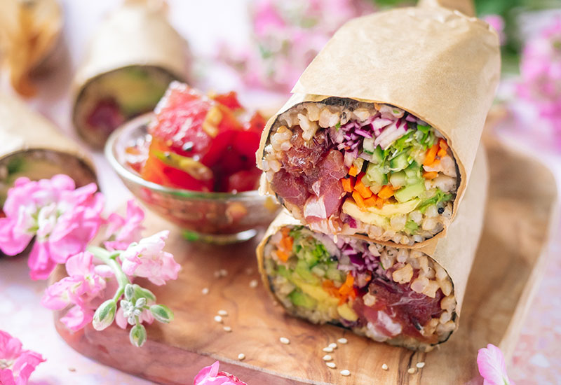

Protein Wrap
A low carb, highly customizable, and high protein choice for those on the move.
Ingredients
1 Mission carb balance wrap (or low carb wrap of choice)
Dressing of choice (personally I like caesar)
Pre-cooked chicken rib meat
1 Bell pepper
1. Microwave 4-6 pieces of pre-cooked chicken meat for 30 to 45 seconds.
2. Place wrap onto plate and spread dressing or sauce of choice onto wrap.
3. Cut up bell pepper into long pieces.
4. Place chicken and bell pepper onto the wrap.
5. Wrap and enjoy!